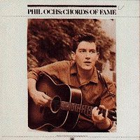

Chords Of Fame
Releases
Date Label Number Country Format Comments
---- ----- ------ ------- ------ --------
1976 A&M SP-4599 USA 2LP out of print
?? A&M SP-6511 USA 2LP ??
- I Ain't Marchin' Anymore
(Electric) (2:47)
- One More Parade (3:00)
- Draft Dodger Rag (2:07)
- Here's to the State of Richard Nixon (2:19)
- The Bells (3:00)
- Bound For Glory (3:15)
- Too Many Martyrs
(2:46)
- There but for Fortune (2:35)
- I Going To Say It Now (2:46)
- The Marines Have Landed on the Shores of Santo Domingo (3:48)
- Changes (4:30)
- Is There Anybody Here? (3:17)
- Love Me, I'm a Liberal (3:46)
- When I'm Gone (3:51)
- Outside Of A Small Circle
Of Friends (3:41)
- Pleasures of the Harbor
(4:59)
(Live from Gunfight At Carnegie Hall)
- Tape From California (3:39)
(Live from Gunfight At Carnegie Hall)
- Chords Of Fame (3:32)
- Crucifixion (live) (7:40)
- The War Is Over (4:25)
- Jim Dean Of Indiana (5:02)
- The Power And The Glory
(2:21)
- Flower Lady (6:06)
- No More Songs (4:33)
Liner Notes
By Ed Sanders
Last modified 18 Oct 98 by trent